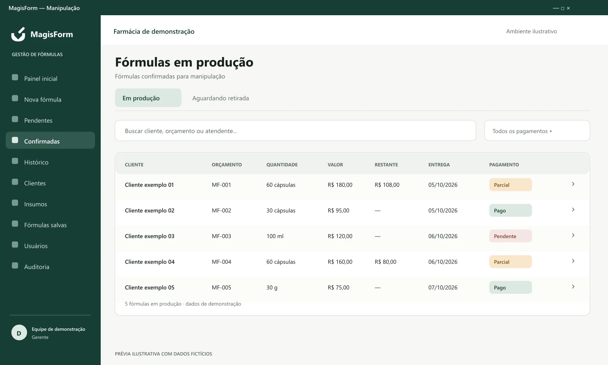
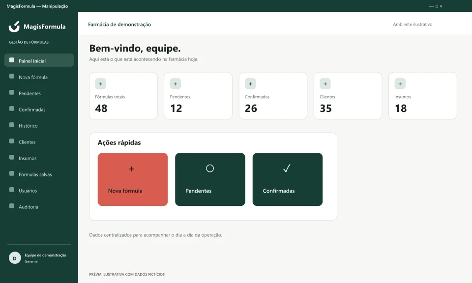
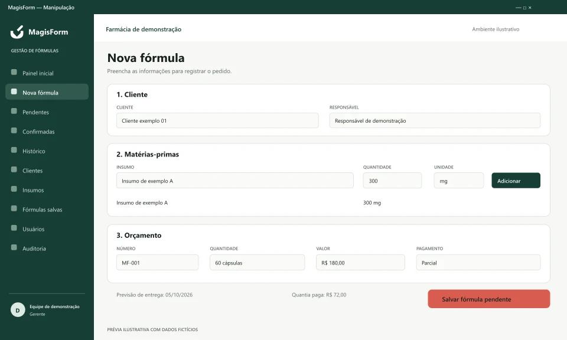

Pedidos em ordem.
Reúna cliente, insumos, orçamento e previsão de entrega no cadastro de cada fórmula.
Organizar os pedidosSoftware para farmácias de manipulação
Acompanhe pedidos, produção, pagamentos e retirada em um só sistema, com informações claras para toda a equipe.
Veja como o fluxo funcionaAplicativo desktop para Windows · Feito para o dia a dia da sua farmácia

Clareza para trabalhar melhor
Da primeira conversa com o cliente ao registro da entrega, sua equipe acompanha o mesmo fluxo.
Reúna cliente, insumos, orçamento e previsão de entrega no cadastro de cada fórmula.
Organizar os pedidosSaiba o que aguarda confirmação, está em produção ou já pode ser retirado pelo cliente.
Acompanhar o fluxoMantenha as informações centralizadas, com acesso por usuário e registros das ações realizadas.
Conhecer o sistemaRecursos que acompanham sua rotina
Do pedido à confirmação
Cadastre a composição, registre as opções de orçamento e acompanhe as fórmulas pendentes e confirmadas.
Informações centralizadas
Mantenha os dados de contato e os vínculos com responsáveis junto ao histórico de cada cliente.
Composição organizada
Organize os insumos usados nas fórmulas e registre suas quantidades e unidades em cada preparação.
Agilidade no cadastro
Reutilize composições salvas e repita fórmulas do histórico para facilitar novos cadastros.
Valores mais claros
Registre pagamentos parciais, consulte o valor restante e acompanhe a situação de cada fórmula.
Controle de acesso
Organize os acessos da equipe por perfil e consulte os registros de ações realizadas no sistema.
Um caminho claro para cada fórmula
O andamento fica visível para que sua equipe saiba em qual etapa cada pedido está.
Cliente, composição, valores e previsão de entrega.
Pedido confirmado com as informações necessárias.
Fórmulas confirmadas para manipulação.
Preparação pronta para a próxima etapa.
Entrega registrada e fórmula disponível no histórico.
Pagamentos e informações acompanham o pedido.
Veja o fluxo no sistemaConheça o MagisForm
Explore as prévias de três momentos da rotina. Na demonstração, você conhece o funcionamento do software.

Visão do dia
Um ponto de partida para acompanhar os registros e acessar as tarefas da rotina.

Informações no lugar
Cliente, composição e orçamento reunidos para dar sequência ao pedido.
Andamento visível
Produção, retirada e pagamentos acompanhados sem perder o contexto de cada fórmula.
Prévias ilustrativas com dados fictícios. A identidade visual foi adaptada para a apresentação do produto.
Uma conversa sobre a sua operação
Veja o fluxo funcionando, tire suas dúvidas e converse sobre as necessidades da sua farmácia de manipulação.
Comece por uma demonstração
Antes de começar
Algumas dúvidas sobre o produto e os próximos passos.
Conversar sobre o sistemaSim. O produto é um aplicativo desktop para Windows. O website apresenta seus recursos e permite entrar em contato para uma demonstração.
O aplicativo precisa se conectar ao banco de dados configurado para a operação. Ele não oferece funcionamento offline ou sincronização posterior. A configuração de acesso pode ser discutida na demonstração.
Você acompanha pedidos pendentes, confirmados, em produção, aguardando retirada e entregues. As fórmulas entregues ficam disponíveis no histórico.
Sim. É possível registrar a quantia paga parcialmente e visualizar o saldo restante na lista de fórmulas confirmadas. O registro de entrega exige que o pagamento esteja marcado como pago.
Sim. O sistema possui usuários com perfis de funcionário, farmacêutico, gerente e administrador, com permissões conforme o perfil, além de registros de ações para consulta.
Use os botões desta página para conversar pelo WhatsApp. A contratação é apresentada por proposta sob consulta, após uma conversa sobre a sua operação.
Mais clareza começa aqui
Conheça o MagisForm e veja como organizar cada etapa, do orçamento à entrega.
Você será direcionado ao WhatsApp.
A mensagem só é enviada por você.
Canal comercial em configuração.